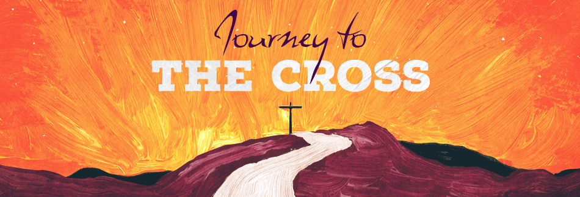

<section class="faith-about-area section-padding-100-0" style="background-color: #f6f6f6;">
  <div class="container">
      <div class="row">
          <div class="col-12">
              <div class="about-content">
                  <!---->
                  <h2 class="welcomeTitle">Upcoming Events</h2>
                  <br><br>
                  <h6></h6>

              </div>
          </div>
          <div class="col-lg-6 col-sm-12" *ngFor="let event of events" style="margin-bottom:5px">
            <div class="card h-100">
                
                <div class="fb-video card-img-top"
                *ngIf="event.embeded"
                [innerHtml]="event.embeded"
                ></div>
                <div class="card-body">
                    <!--<h5 class="card-title">{{event.name}}</h5>
                    <p class="card-text"><strong>{{formatDate(event.date)}} {{event.time}}</strong></p>-->
                    <!--<p class="card-text" *ngFor="let description of event.description" [innerHtml]="description"></p>-->
                    <div *ngFor="let description of event.description" [innerHtml]="description">

                    </div>


                </div>
            </div>
        </div>

          <!--<div class="col-lg-6 col-sm-12">
              <div class="card h-100">
                  <div class="fb-video card-img-top"
                  data-href="https://www.facebook.com/video.php?v=207308514377633"
                  data-width=""
                  data-allowfullscreen="true"></div>
                  
                  <div class="card-body">
                      <h5 class="card-title">Journey  to the Cross</h5>
                      <p class="card-text"><strong>MArch 28, 2020 From 2pm - 4:30</strong></p>
                      <p class="card-text">Come join us for a drive through presentation of Jesus's journey to the cross. There will be live animals and actors illustrating Jesus's journey to the cross</p>


                  </div>
              </div>
          </div>-->
      </div>
      <br>
  </div>
</section>
